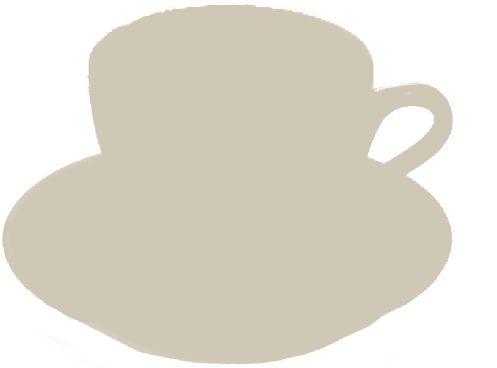
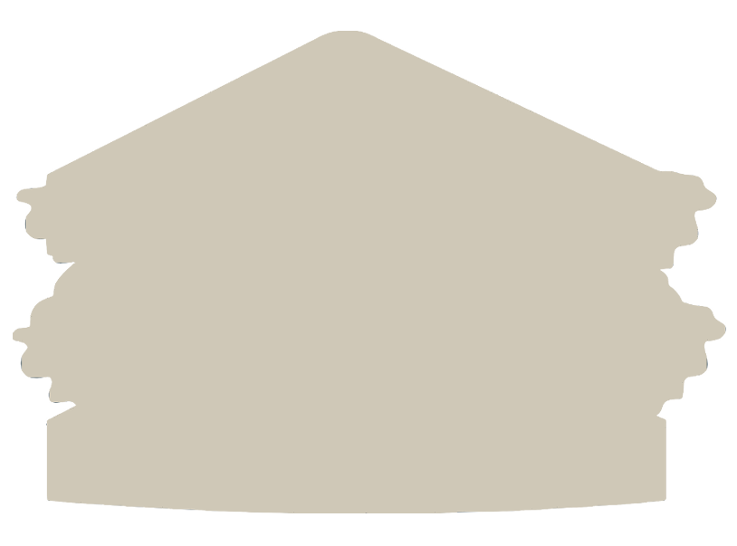

PHP 90, Americano: The classic Black coffee diluted with water. As the pleasant bitter taste lingers in your mouth, the coffee steams with heat. You may request the customization of the amount of water and espresso shots in your Americano.
 PHP 420, Kapebara: The classic Kape Capybara coffee, a bitter mix of coffee, Capybara stool, and Capybara milk. The bitter taste stays in your mouth for approximately 5 months, it is quite traumatizing and very unpleasant. If any negative side effects of the viruses in the feces occur, please don't contact us.
PHP 90, Americano: The classic Black coffee diluted with water. As the pleasant bitter taste lingers in your mouth, the coffee steams with heat. You may request the customization of the amount of water and espresso shots in your Americano.
PHP 90, Green Tea: A warm green tea, also available iced. The classic green tea bag steeped for 79 days in boiling water, the taste of our green tea is so strong your tongue will shrivel at the bitter taste. May cause projectile vomiting, dizziness, injury, or death.
 PHP 1,000, Capybara Sandwich: The meat of the Capybara covered in a sweet sauce of stork broth mixed with barbecue sauce. This sandwich is somewhat nutritious if all infected meat is removed. Price may vary according to how much special sauce is added by the chef, maximum price to be charged is PHP 7,000,000
PHP 90, Grilled Cheese: Grilled Cheese, two pieces of white bread sandwiching a piece of cheese. The sandwich is grilled to a golden brown crisp, you may not request for any add-ons other than Capybara meat. Any addition of Capybara meat changes the price to PHP 70,000.